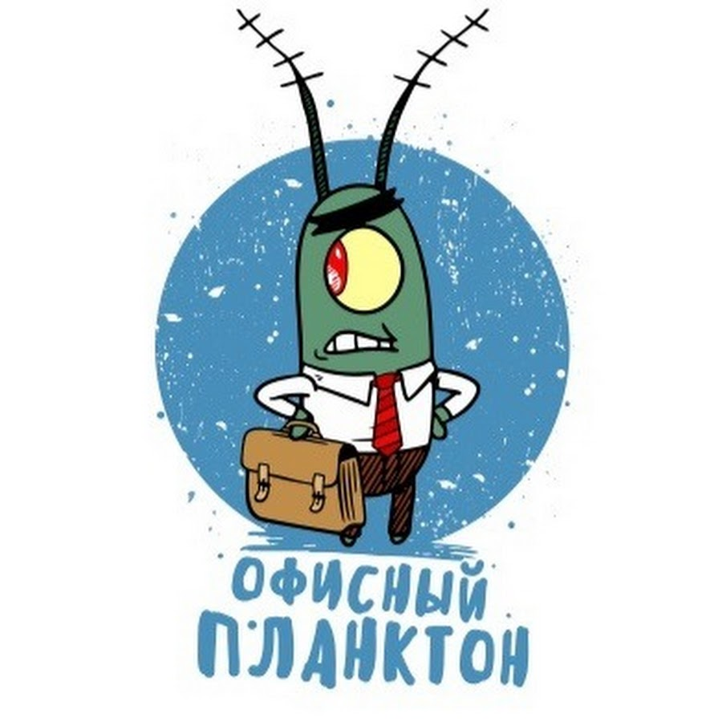

«Офисный планктон» (также «канцелярские крысы») — сленговое выражение, обозначающее особый тип офисных работников, которые вместо развития и достижения новых целей на работе занимаются монотонной и малоактивной деятельностью.
Характеристики офисных планктонов:
-Выполнение однообразных задач, часто без творческого участия.
-Мало инициативы, снижение мотивации и вовлеченности.
-Стремление к стабильности, избегание риска и изменений